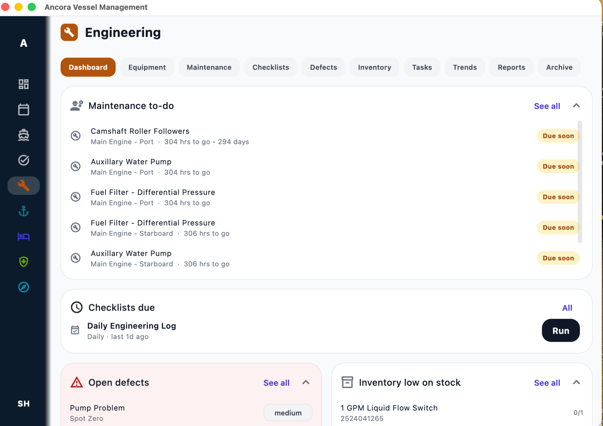
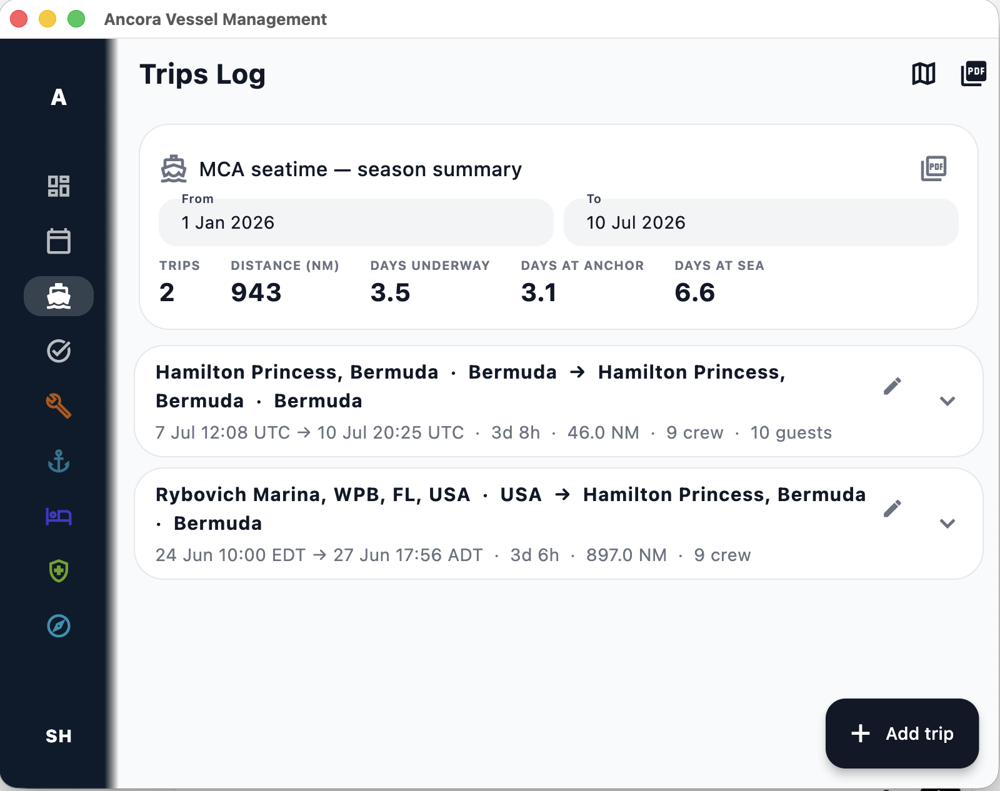

Maintenance
Track recurring jobs, running-hour tasks and upcoming work from a clear department dashboard.
Built around real yacht operations
Organize maintenance, defects, inventory, tasks, certificates and voyage records without forcing every department into a complicated workflow.

Practical by design
Ancora keeps operational information close to the people responsible for it, while giving the captain a clear overview.
Track recurring jobs, running-hour tasks and upcoming work from a clear department dashboard.
Record faults, assign responsibility, add context and follow each issue through to completion.
Keep parts and supplies visible, with low-stock information connected to vessel operations.
Plan work across departments, run recurring checklists and keep completed work easy to find.
Store certificates and their dates in one searchable place, with simple due-soon and expiry views.
Maintain voyage records, distance, time underway, crew and guest details, then export when needed.
Log a defect with a photo in seconds, add a task, run a checklist, adjust stock — from the phone in your pocket during a walkaround.
Every desktop and mobile app works fully offline. Changes sync back to the vessel-wide picture as soon as you have signal.
See what matters
Each department gets focused tools. The wider operation stays connected.
See upcoming work, active issues, checklist status and low stock without jumping between disconnected systems.
A straightforward task board keeps department work, defects, priorities and ownership easy to understand.

Search certificates, review upcoming dates and maintain clear voyage records from within the same application.


Built from experience
Ancora began as a practical response to the fragmented spreadsheets, lists and disconnected programs used across vessel operations.
It is being developed by a serving superyacht captain, with a focus on clarity, reliability and workflows that make sense onboard.
Testing phase
Ancora is being tested with a small group of vessels. Join now, use the full product, and help shape it before the paid version is released.
Testing access
Paid subscription plans will follow. Testers will be given at least 30 days' notice before any fees apply.
A calmer way to manage the vessel